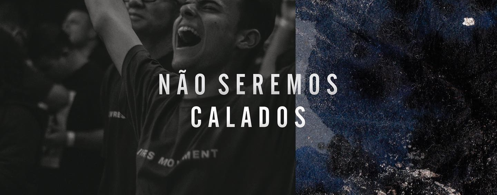
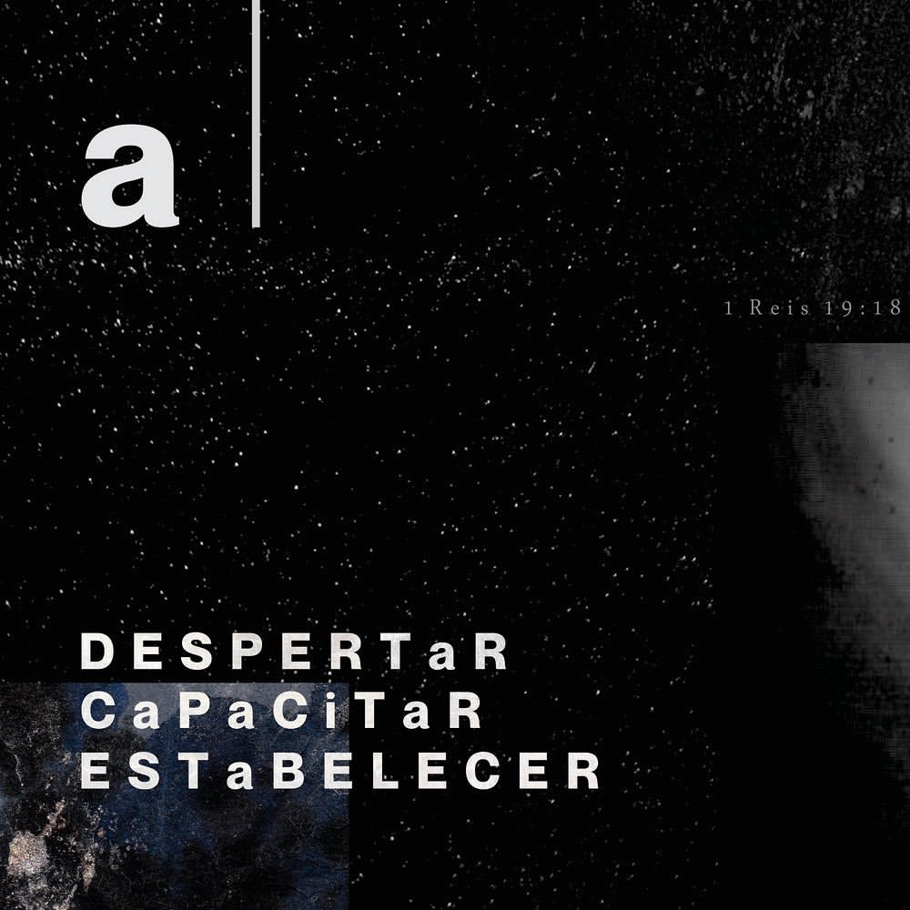
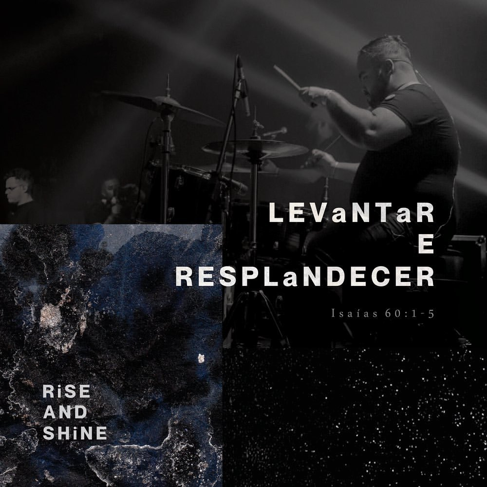

Rolar para baixo Rolar para baixo Rolar para baixo Rolar para baixo
Escola de Adoração
7K é uma escola de adoração, organizada pelo LMA, com enfoque no despertamento de pessoas para o chamado ministerial na área do louvor & adoração,
capacitação destes para servir com música e artes na igreja local e estabelecimento de um coletivo que se move, no serviço ministerial, sob o ministério profético.
Entendemos que, baseado na revelação concedida pelo próprio Deus ao profeta Elias (1 Reis 19:18), o Espírito Santo tem guardado um remanescente (Romanos 11:5), um povo afastado do deslumbramento, do desamor, da dissimulação, da hipocrisia, da cobiça e da vaidade predominante nos Últimos Dias (Mateus 24:4-13). Estes são os filhos de Deus - filhos maduros - os quais
a criação aguarda ansiosamente a manifestação (Romanos 8:19), para um propósito de restauração das cidades, estados e nações (Isaías 61).
Despertar
A Escola 7K visa o despertamento de homens e mulheres para o propósito do chamado ministerial na área do louvor e adoração, através de ensino bíblico e teológico, consagração crescente (2 Crônicas 7:14) e dedicação constante.
Capacitar
A Escola 7K visa a capacitação ministerial de adoradores que atuem na igreja local na área das artes - música, dança, teatro, audiovisual, dentre outros - fazendo isso através de cursos, workshops e formações propostas pela escola.
Estabelecer
A Escola 7K visa o estabelecimento de um coletivo de profetas que servem à Igreja e se movem profeticamente para restauração de adoração e oração ininterrupta (Amos 9:11-15) na cidade, estado e nação.

Levantar e Resplandecer
Cremos que o cativeiro da ignorância, do sono espiritual e da frieza está chegando ao fim.
Cremos que a glória do Senhor está surgindo e resplandecerá sobre a escuridão.
Cremos que os principados e potestades que aprisionam gerações e gerações estão sendo destituídos através da adoração, oração, intercessão e clamor da igreja.
Cremos que sobre uma região, tribo, povo ou nação reina quem é adorado, e por isso deve-se levantar altares de adoração e oração ininterrupta a Deus em todos os lugares.
Cremos que a adoração entroniza o Rei dos Reis (Salmos 22:3) e assim Ele estabelece Seu Reino e vontade (Mateus 6:10) sobre os homens.
Cremos que a realidade caída, de crise, miséria e desolação, será transformada pela restauração prometida pelo Senhor através de Seu reinado e governo.
Cremos que Seu Reino está próximo e a sua vinda é certa.
Cremos que, assim como na parábola das Dez Virgens (Mateus 25:1-13), nesta geração existem pessoas adormecidas e despertas, e por isso devemos estar vigilantes em oração e atentos aos sinais de Sua volta.
Cremos que há um estado de inconformação contra a idolatria na instituição e do coração, contra o adormecimento espiritual, contra o contentamento de uma geração que experimenta um mover, mas que se afasta da essência e esquece o primeiro amor (Mateus 24:4-13).
Cremos que o Espírito Santo será derramado sobre toda a carne através de um avivamento pleno que alcançará todos os povos, línguas, tribos e nações.
Cremos que o Espírito Santo está despertando, em um movimento crescente desde a Igreja Primitiva, um remanescente em toda a Terra.
Cremos que o Espírito Santo está chamando filhos maduros que são guiados e ensinados pelo Espírito Santo (Romanos 8:14) a obedecer Sua palavra e a realizar Suas obras (João 14:12), a ouvirem o clamor da criação (Romanos 8:19) e a responderem ao chamado de Deus para esta geração (Isaías 6:8).
Cremos que estes filhos são embaixadores do Reino (2 Coríntios 5:20), sal da terra, luz do mundo (Mateus 5:13-16), que entendem e atendem, em humildade, ao chamado divino, sabendo que este é um ato de obediência e adoração a Deus, onde glória maior será revelada (2 Coríntios 3:4-9).
Cremos que Deus colocará Seus filhos nos lugares mais altos, de influência e autoridade, para que a Sua luz resplandeça sobre os povos (Mateus 5:14-16), assim como o profeta Isaías afirma:
1 Dispõe-te, resplandece, porque vem a tua luz, e a glória do Senhor nasce sobre ti.
2 Porque eis que as trevas cobrem a terra, e a escuridão, os povos; mas sobre ti aparece resplendente o Senhor, e a sua glória se vê sobre ti.
3 As nações se encaminham para a tua luz, e os reis, para o resplendor que te nasceu.
4 Levanta em redor os olhos e vê; todos estes se ajuntam e vêm ter contigo; teus filhos chegam de longe, e tuas filhas são trazidas nos braços.
5 Então, o verás e serás radiante de alegria; o teu coração estremecerá e se dilatará de júbilo, porque a abundância do mar se tornará a ti, e as riquezas das nações virão a ter contigo.
Isaías 60:1-5
Versão Almeida Revista e Atualizada
O falar é procedido pelo o ouvir.


Na crise existencial de um profeta, Deus revelou que aquele que busca o realinhamento com a vontade Dele não está sozinho.
Há um remanescente! Está chegando o tempo da restauração desta terra. Levanta e resplandece!